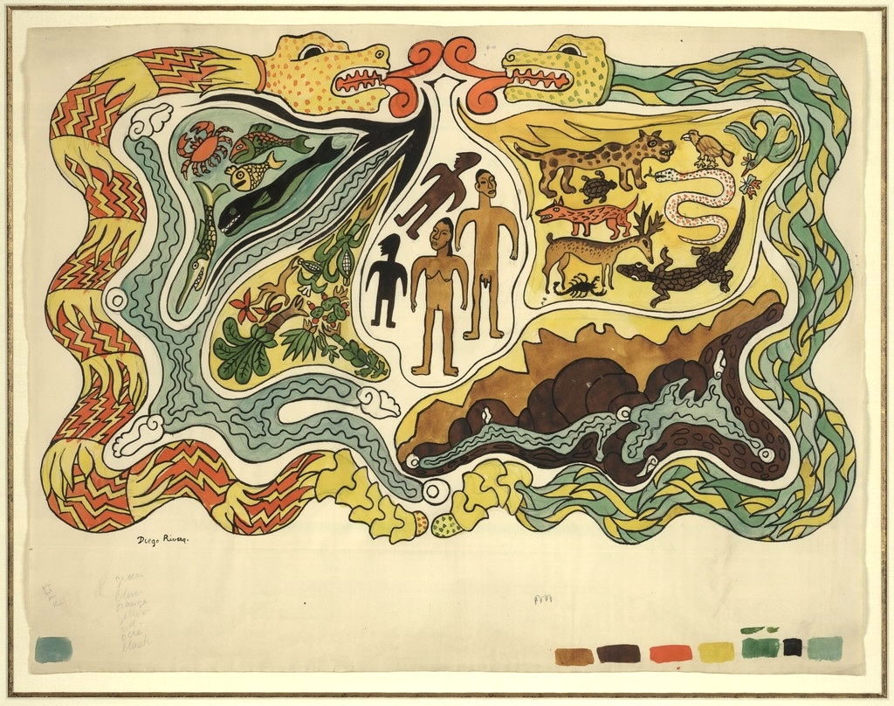

Social art history (sometimes referred to as Marxist art history, critical art history, or new art history) is a theory and methodology that examines the socio-economic context of art and design objects. It originated from Marxist theory, and in its most basic form, analyzes class, ideology, and politics, and how these forces shape art production. In his seminal text, T.J. Clark explains how art is inextricably linked to the social and political conditions of the time the art was made and viewed. He posits that social art history is essentially the antithesis of formalism—it is dangerous to draw simple analogies between form and content. Similarly, art historian Max Baxandall expands on the economic relationship of patronage and viewers' relationship to fifteenth-century painting, whilst design historian Kristina Wilson investigates the political ideologies embedded in American modernist design. Baxandall’s concept of “the period eye” conceptualizes how Renaissance imagery was perceived through the social historical lens of the fifteenth-century viewer whose life and social conditioning was vastly different than now; and similarly how Manet’s Olympia sparked controversy and outrage in nineteenth-century France that might be deemed excessive through our contemporary lens. Social art history has its roots in Marxist perspective, which frames art, and all cultural production, as a powerful tool of social indoctrination and political influence. The Marxist branch of social art history explicitly emphasizes how the socio-economic conditions and the personal political affiliations of artists changed the way art was made, identifying class stratifications and ideology as integral to the production of art. Social art historians believe class to be a deeply important factor in art-making, yet it is but one of many factors; a sole focus on class is a potential oversimplification of art that is heavily influenced by Marxist agendas in the twentieth century, where artists were seen as conduits for communist ideology and proletariat idealism. While orthodox Marxist analyses emphasize socioeconomic superstructures and their impact on art and design, Clark on the other hand argues for a more expansive definition of social art history, one that places the artist and society in a dialectical relationship: society determines the nature of art, but the artist can choose to respond either by subverting or conforming to social expectations. Thus, social art history, as it is practiced today, covers a range of sociological topics—from class and ideology to race and gender—to analyze, describe, and write the history of art.